BARTERS & BOOTSTRAPS
The inside dirt on finding and selling wild edibles.
If someone were to tell you that you could be making $200, $300, or even $500 a day picking mushrooms, your first thought might be: "Are these the same kind that were passed around campus 20 years ago?" Not to worry. Commercial trading in wild edible and decidedly nonpsychedelic mushrooms has grown tremendously in the last ten years. A little research, attention to detail, a willingness to learn, and some woods sense are all you need to become proficient in this trade. The most prolific commercial activity occurs in the Northwest, but there are marketable mushrooms in virtually every area of North America, and pickers at the height of the season can make thousands of dollars.
I am often asked, "If these mushrooms are so valuable, why isn't somebody growing them in their barn?" Some, such as the shiitake mushroom, can be cultivated, however, the mushrooms listed here are generally mycorrhizal in nature. In other words, they are dependent upon the root system of the trees that they are growing under. If you can figure out a way to duplicate those roots in a barn, you'll make a fortune. Until then, we've just got to get out there and find them.
Getting Started
Do not attempt to go out and pick a mushroom to eat without getting someone knowledgeable to confirm identification of that species. Picking and eating without proper study is literally a prescription for disaster, given the number of poisonous varieties that often look perplexingly like their culinary counterparts. If you do not know anyone who can help, contact the North American Mycological Association at 3556 Oakwood, Ann Arbor, MI 48104-5213, (313) 971-2552. They have chapters all over the country with many people willing to help out. Turn to the next page for a brief guide to some of the market favorites.
If you are in an area like the Northwest where much commercial activity occurs, it would behoove you to find a buying station to see what species they are taking in. Most buyers will purchase more than one species even though they are in a particular area for a particular mushroom. These buying stations are much like clearinghouses of information, and good places to track down pickers coming out of the brush to ask them some questions. Don't bother asking a mushroom picker exactly where his patch is; you are likely to get directions to the local dump. Mushroom patches are closely guarded secrets, especially as some species produce in the same spot year after year.
Your equipment will consist of sturdy work clothes. Good hiking boots or the lighter hiking tennis shoes are a must. Get a handy Swiss knife for cutting stems and a few five-gallon plastic buckets and you are ready to go. I also carry a compass for terrain that I am unfamiliar with as well as a USGS map. Permits for picking vary from region to region. Be sure to check into this thoroughly, as a confiscated bucket as well as a fat ticket is two days lost picking time. The average price for a ten-day picking permit from the Forest Service in the Northwest is $10. If you are picking for personal use, permits are free. Private lands are generally unregulated. Simply ask the owner for permission and you'll usually get it.
Selling What You Find
So, we have a pile of mushrooms-what do we do with them? You may have to do a little creative selling if you are not in an area where there are established buyers. I have gotten my best prices for wild edibles from chefs in the higher priced hotels and restaurants. Any chef worth his paycheck will jump at the chance to have a somewhat steady source of wild mushrooms, and all are familiar with the various varieties. This may necessitate spending some time on the phone working out schedules. But the higher prices you receive from direct marketing like this make it the preferable method of sale. New York, Chicago, San Francisco, and most other major cities have a variety of places to market wild mushrooms. Even small towns with enough local restaurants will have a buyer.
Drying before selling is a handy option that works well for mushrooms like the morel. It's virtually a given that you'll be able to sell them to a wholesaler or directly to restaurants. Prices for dried mushrooms hover around $75-$100 per pound, but find your market first before you commit yourself to the lengthy drying process.
THE MOST POPULAR WILD EDIBLE SPECIES
Morels (Morchella elata/Morchella esculenta)
Morels are a spring mushroom and can be very elusive at times. In the Pacific Northwest you can find them in great quantities after major forest fires. From this predictability they are subject to much commercial activity and are well regulated by the USFS after fires that occur on Forest Service lands. Private forest lands are a different story and may require some artful speaking on the pickers part to get permission. For most commercial pickers of the black morel, research begins by monitoring the forest fires that occur the summer prior to a spring season. From the Cascade Range east to the western slopes of the Rockies, from Northern California all the way to southern Alaska, including British Columbia and the Yukon Territory, any timbered country is subject to this phenomenon as long as weather permits. Good snow packs and a wet spring will generally produce an astounding crop of morels on these fire lands. Aggressive pickers commonly bring in 75-100 pounds a day. Commercial shippers are particularly fond of the fire morel for the simple reason that the fire that produces them in such numbers also eliminates that year's insect population that so love to munch this tasty treat.
Michigan also has a well-known and much anticipated spring morel season, with accompanying festivals. These morels are of the harder-to-find variety called the esculenta, or as referred to in the Northwest, the "natural." Generally, they are found in lower river bottomlands under leaf trees such as elms. There are several offshoot varieties that show themselves in areas such as old apple orchards. Generally speaking, what the natural lacks in quantity, it makes up for in size. The morel can be found nearly everywhere in the United States, but it is well known for being cagey and hard to find. Keep in mind that trees are required as well as moisture.
Matsutake/Japanese Pine
(Tricholoma magnivelare )
Recently reclassified from Armilliria genera and listed on older volumes as Armilliria ponderosa , the pine mushroom is the most valuable of all wild edibles. The Japanese often pay unbelievable prices for this imported delicacy. The 1992 fall season recorded a price of $525 a pound for the number one grade. Competition is fierce at buying stations, often with price wars erupting between buyers vying for pickers' products. Most commercial activity occurs in the Cascade Range of Washington and Oregon, with many pounds being harvested in British Columbia also. This mushroom is not limited to those areas, though. Southern Puget Sound has an excellent crop, as does Michigan and the Adirondack Mountains of New York. Granted, most commercial activity does occur on the West Coast where consistent crops are expected, but this should not prevent a picker from developing his own market where the pine is found. Ninety-nine percent of all pines are shipped fresh market to Japan within 24 hours, but there are many and varied Asian communities throughout the United States where produce stores and restaurants would jump at the chance to purchase this mushroom.
Finding the pine does represent a challenge. The most common method is looking under its namesake, the ponderosa pine tree. It can be as easy as taking a walk and spotting mushrooms that have already emerged from the ground. Experienced pickers practice a method of looking for unnatural humps in the pine needle beds, indicating a young mushroom forcing its way to the surface. Since these younger mushrooms are of a higher grade than mature mushrooms, this method will certainly reap more profits. And the pine is not limited to pine trees, as I have found many pounds under fir and even hemlocks. This mushroom is mycorrhizal in nature, which means that it has a relationship to the root system of the tree it is growing under.
Grading pines is relatively easy. There are five grades, and all are dependent on the "veil" that attaches from the cap to the stem. Grade one is a young mushroom whose veil is attached 100 percent with no holes. Grade two has 50 percent attachment. Grade three has a veil varying from 50 percent down to a clinging piece. Grade four is a fully mature mushroom that has flattened out. At the buying station, grading can make or break your day, so finding a buyer who is consistent with his technique is a must to the commercial picker.
The Chanterelle ( Cantherellus cibarius ) This bright yellow variety is well-known the world over.
Once again, great quantities are shipped from the Northwest with the bulk being harvested from private and national forest lands in the southern Puget Sound region. It is, however, a mushroom you can find across the United States-a family friend has found good quantities in the southern portion of Louisiana. The Chanterelle is a fall mushroom that generally fruits after that season's first rains. In Northern California you can sometimes find them in the spring in limited quantities. The astute mushroom picker marks his patch carefully on his map, as the chanterelle will generally show itself in the same spot year after year.
There is a rule I apply to chanterelle picking that works well for me. I call it the Triple D rule. Triple D refers to three conditions that are very conducive to chanterelles: deep, dark, and dank. These are heavy timber conditions, but old growth timber is not a prerequisite. I have found dozens of pounds in second-growth and even third-growth timber stands. Their tree of choice is the Douglas fir, but I have found them growing under several varieties of needle trees, including spruce and hemlock, as well as leaf trees such as the tan oaks in Northern California.
The chanterelle is a mushroom that fares well in the cooler and does not experience much weight loss from a week or ten days in storage. It is a well-known mushroom, and selling them to restaurants is relatively easy. Your largest concern should be to pick the mushroom clean. One or two dirty mushrooms in your bucket or basket can dirty up the whole batch, necessitating a painstaking, time-consuming cleaning process. Cut your stems while in the field, preferably while the mushroom is in the ground.
The King (Cep/Porcint)
(Boletus edulis)
The king is aptly named, for it is a giant among gourmet edible mushrooms. I have come across specimens over 12 inches tall and weighing in at nearly two pounds. Like the chanterefle, the fang is known the world over and is the favorite of the Italians and Germans. Most boletes (and there are many varieties) are found in the fall. I have in fact found kings in the same area that I had found chanterelles earlier in the spring. Generally speaking, its tree of choice is the spruce. And, once again, people pick it in great quantities in the Northwest, but there are some kings that are found in the spring in higher elevations of the Cascades and Rocky Mountains-most after the spring snow melts.
The Triple D rule also applies to this mushroom, and so does marking your map for further seasons down the road. The king is also highly sus ceptible to worms. Before shipping fresh to your favorite chef, I suggest you slice the older specimens in half to check for these pesky creatures. Even one single worm hole is enough for a chef to reject that mushroom. Drying these tainted mushrooms is the accepted way of salvaging these mushrooms and marketing them. The king has three grades as far as a commercial buyer is concerned. Grade one is the small, newly emerged "button." This young king has very white gills at this time and all aspects of the mushroom are firm. Grade two reveals slightly yellowish gills and a larger mushroom. Grade three is a fully mature mushroom that is worm free.
I have heard reports of kings being found in the Northeast as far north as Maine. Michigan has a fine fall season, as does Colorado. The king is also a mush room found across the United States wherever there is timber. Due to the different varieties of the boletes, be sure that you have identified the king positively.
These four species are by no means the only wild edibles commercially marketable. A few others include the oyster mushroom (Pleurotus ostreatus)
the hedge hog (Hydnum repandum) , the early morel (Verpa bohemica) , the false morel ( Gyromitra esculanta ), the black trumpet (Canthereluus fallax) , and chicken of the woods
(Laetiporus sulphurues).
A Picker's Philosophy
Mushroom picking is a very nonintrusive, non-environmentally degrading occupation. There is little chance that one is going to affect future crops of mushrooms since each mushroom releases millions of spores. Problems do develop when pickers disregard property boundaries and are disrespectful toward the environment. "Pack it in, pack it out," is a wise phrase coined by the USFS. Come across a gate that you need to open? Then close it after yourself. Be gentle; pick conscientiously. Don't pull mushrooms; cut the stems while in the ground so as not to disturb the mycelium (the portion of the mushroom submerged in the ground). Bear in mind that you are picking the fruit of a mold.
Mushroom picking is also very addicting. Finding your first patch can be quite a thrill. Even after picking hundreds and hundreds of pounds over the years, I am still excited beyond description when I stumble upon the ultimate patch. What is the ultimate patch? One so thick that you can't take a step without crushing a handful. Possible? You bet. Good hunting.
Suggested Readings & Writings
• Income Opportunities in Special Forest Products: Bulletin 666, by the United States Forest Service. Available free from the Forest Service, USDA, Box 96090, Washington, D.C. 20090-6090. This book is a tremendous resource for the beginner. There are many listings of commercial buyers as well as generic permit forms plus much information concerning commercially growing mushrooms that are domesticatable.
• The Audubon Society Feld Guide to North American Mushrooms, by Gary H. Lincoff. (Alfred A. Knopf, NY, 1995).
• The Mushroom Hunters Feld Guide , by Alexander Smith. (University of Michigan Press, Ann Arbor, 1980).
• Mushroom: The Journal of Wild Mushrooming . Box 3156, Moscow, ID 83843. Back Issue #39 reviews all the mushroom books published in the U.S., and #44 has the index of all previous issues. $4 each, postpaid. $16 a year.
|
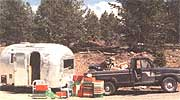 The portable buying station |
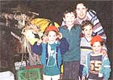 The next generation of pickers with their mom |
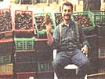 Me with a mess of morels, 840lbs-one day's buy |
|
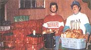 1,800lbs of boletus edulus and local pickers |
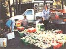 One day's picking for a man and wife team: nearly $1,200 worth of pine mushrooms |
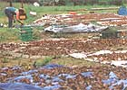 Morels on the tarp drying |
|
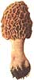 Matsutake/Japanese Pine |
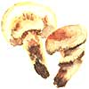 |
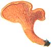 |
|
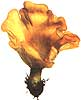 |
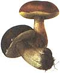 |
|